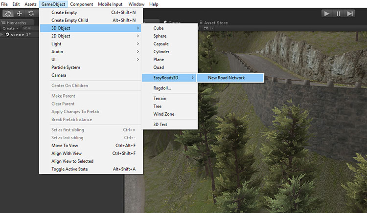

|
EasyRoads3D V3 Manual | |
Quick Start
PROVISIONAL V3 BETA VIDEOS The below videos are provisional TUTORIALS http://www.unityterraintools.com/tutorials.php
DEMO PROJECT [Pro] After going through this quick Getting Started section it is recommended to download the free demo project from the Unity Asset Store. It includes examples of the various features with tutorials available here. This demo project also includes several road types, materials and a range of different side objects. These assets can be used in your own projects.
IMPORT PACKAGE Let's first import the EasyRoads3D v3 package. This package includes tool only with one road type and 2 crossings. You can create road types and crossings using your own materials. This will add the following new menu item in the Main Unity menu bar: Main Menu > GameObject > 3D Object > EasyRoads3D > New Road Network  A new game object "Road Network" will be created and selected in the scene hierarchy (Make sure to first add a Unity terrain object). In the Inspector you will see the EasyRoads3D v3 toolbar:
Creating a Road To create a new road, click the second tab from the left 1) Hold SHIFT and click in the scene to add markers. The road will appear after adding two markers. Clicking in the scene will deselect the road. Clicking one of the marker handles will reselect the road object. More markers can be added by holding SHIFT and click 2) Markers can be inserted between other markers by moving the mouse to the new marker position and hitting the I key. 3) Markers can be removed by hitting the R key. 4) Marker positions can be changed by selecting the marker, it will light up and become green after clicking it. You can select the traditional position handle or the rectangle move handle by pressing the W key (Position handle) or M key (Move handle). 5) Multiple markers can be selected and edited by holding the Shift key when selecting markers. These are the basics for road creation. - Click here for additional road options in the scene, tutorials
Creating a Crossing [Pro] Next we will create some crossings. Crossing prefabs can be placed directly in the scene or attached to the selected road. 1) In the Inspector select the third tab from the left 2) Select the prefab you want to add to the scene 3) Hold SHIFT and click in the scene where you want to position it. The crossing will be instantiated. As long as no other action was done, like selecting a road or moving the crossing, multiple crossings of the same type can be added by repeating step 3). 4) Green handles will be visible in the center of each crossing connection. Roads can be pulled out of the connections by moving the mouse to one of the green handles, hold the left mouse button down and drag. 5) Roads can be created instantly between crossings this way. Hold the left mouse button down and drag to the other crossing connection. The road will snap to the other crossing. 6) Existing roads in the scene can be connected the same way provided that the shape matches the connections shape. The connection handle will turn red if this is not the case. Select the first / last marker of the road and move it to one of the green connection handles, it will snap to the connection. 7) As mentioned above, when a marker is selected, the connections tab will display matching crossing /connection prefabs. Pressing the prefab will attach it to the start or end of the road or insert it between road sections. This will result in the road being split in two roads sections. 8) Crossing / connection prefabs can also be inserted by moving a marker over another road segment. When a matching prefab exist the snap position will be highlighted in blue. Releasing the mouse button will insert the prefab that matches the involved road types best. 9) Crossings can be moved by clicking on the yellow sphere handle in the center. Just like with markers the crossing can be moved with the traditional position handle (W key) or the rectangle move handle (M key). Additionally you can also rotate the crossing, click the E key to activate the rotation handle. 10) Alternatively, intersections can also be added to the start or end of the road. Select the first or last marker of the road you created earlier. A list of available crossing prefabs will be displayed in the Inspector. Click the prefab you want to attach to the selected marker. It will automatically attach to the selected marker. Intersections can also be auto inserted when snapping roads together by moving a marker over another road section and when a blue circle is displayed. This means a matching intersections prefab for the involved roads is available and can be auto inserted. - Click here for additional crossing prefab options in the scene
Side Objects Side objects are set up in the Side Object Manager Side Objects can be activated for a road in the main Side Objects section just below the main Road Settings. Side objects can also be activated for specific road types in General Settings > Road Types. These side objects will be auto activated for new instances of that road type. Whether a side object is instantly build depends on "Default active state for each marker" in the Side Object Manager. Some side objects are generally active on all markers (for example lampposts) whereas other side objects will only be active on a selection of markers (for example bridges or guard rails). In this case it is more efficient to initialy not build the side object along the full track. "Default active state for each marker" can be used to control this. Side objects can be activated / deactivated per marker in the Marker Side Object Settings section just below the general marker controls. The start / end position (offsets) can also be fine tuned here. The H key toggles on/off Scene View handles to fine tune these offset values. Zoom in closer to the selected marker if these handles are not visible. - Click here for more info about Side Objects
Conforming the Terrain Next we will flatten the terrain to match the road shapes. Click the middle Mountain tab - Click here for additional options in Build Mode
IMPORTANT: always check the Release Notes section for important information!
- road types
|
|